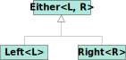

Gestión de errores sin excepciones
Máster en Ingeniería Informática
Facultad de Informática
Universidad Complutense de Madrid
- Motivación
- Tipos anulables
- Tipo Option
- Tipo Either
- Tipo Validated
Motivación
Gestión de errores
- En muchos lenguajes imperativos se utilizan excepciones para controlar los errores ocasionados durante la ejecución del programa.
- Sin embargo, las excepciones no encajan muy bien con la programación funcional.
- Rompen la propiedad de la transparencia referencial.
- Entran en conflicto con las funciones de orden superior de Java.
Excepciones y transparencia referencial
- Supongamos el siguiente programa:
fun ejemplo(): Int { val x = g() return try { x + 1 } catch (e: Exception) { 0 } } - La propiedad de transparencia referencial de los lenguajes funcionales nos permite reemplazar la
xpor su definición sin alterar la semántica del programa:fun ejemplo(): Int { return try { g() + 1 } catch (e: Exception) { 0 } }
Excepciones y transparencia referencial
En efecto, si g está definida así:
fun g(): Int = 1
Las dos funciones son equivalentes:
fun ejemplo(): Int {
val x = g()
return try { x + 1 } catch (e: Exception) { 0 }
}
// ejemplo() devuelve 2
fun ejemplo(): Int {
return try { g() + 1 } catch (e: Exception) { 0 }
}
// ejemplo() devuelve 2
Excepciones y transparencia referencial
¿Qué pasaría si definiésemos g del siguiente modo?
fun g() = throw Exception()
¡Ya no son equivalentes!
fun ejemplo(): Int {
val x = g()
return try { x + 1 } catch (e: Exception) { 0 }
}
// ejemplo() lanza una excepción
fun ejemplo(): Int {
return try { g() + 1 } catch (e: Exception) { 0 }
}
// ejemplo() devuelve 0
Excepciones y funciones de orden superior
- En Java, un método no puede lanzar una excepción cuyo tipo no haya sido declarado en su cláusula
throws. - Esto hace que el siguiente código Java no sea aceptado por el compilador:
List<String> ficheros = List.of("fich1.txt", "fich2.txt", "fich3.txt"); ficheros.forEach(name -> { Reader r = new FileReader(name); Puede lanzar IOException System.out.println(r.read()); });
Alternativa: valores centinela
- Consiste en codificar la presencia de errores en el resultado de una función.
- Ejemplos en Java:
String.indexOf(char c). Devuelve-1si el carácter no se encuentra en la cadena.Map<K, V>.get(K key). Devuelvenullsi la clave no se encuentra en el diccionario.
- Problema: el compilador no obliga a comprobar los valores centinela en el resultado de una llamada.
Problema con los valores centinela
- Ejemplo 1:
String cad = ...; cad.substring(cad.indexOf('P'));IndexOutOfBoundsExceptionsi el carácter'P'no está en la cadena. - Ejemplo 2:
Map<Integer, String> dicc = ...; String nombre = dicc.get(2); nombre.toLowerCase();NullPointerExceptionsi el diccionario no contiene la clave'2'.
Sobre el uso de null
I call it my billion-dollar mistake. It was the invention of the null reference in 1965. At that time, I was designing the first comprehensive type system for references in an object oriented language (ALGOL W). My goal was to ensure that all use of references should be absolutely safe, with checking performed automatically by the compiler. But I couldn't resist the temptation to put in a null reference, simply because it was so easy to implement. This has led to innumerable errors, vulnerabilities, and system crashes, which have probably caused a billion dollars of pain and damage in the last forty years.
C. A. R. Hoare. Premio Turing en 1980
¿Cómo evitamos este problema?
Haciendo que el compilador nos obligue a comprobar la presencia de centinelas en los valores devueltos por las funciones, antes de utilizarlos.
- Mecanismos:
- Tipos anulables: Kotlin, TypeScript, C#.
- Tipo
Option/Maybe: Java, C++, Scala, Haskell.
que pueden evolucionar a:- Tipo
Either. - Tipo
Validated.
Tipos anulables
Puntero null en Kotlin
- Por defecto no se permite asignar el valor
nulla variables o pasarlo como argumento:fun imprimir(s: String) { ... } ... imprimir(null) Error de compilacióndata class Direccion(val calle: String, val numero: Int, val piso: Int) val z1: Direccion = null; Error de compilación val z2 = Direccion("C/ Salvador Dalí", 32, null) Error de compilación
Tipos anulables
- Si se quiere asignar o pasar el valor
null, el tipo receptor ha de ser anulable:fun imprimir(s: String?) { ... } ... imprimir(null) Correctodata class Direccion(val calle: String, val numero: Int, val piso: Int?) val z2 = Direccion("C/ Salvador Dalí", 32, null) Correcto
Tipos anulables
- Para cada tipo
T, existe un tipoT?que contiene todos los valores deT, y además el valornull. - Además, se cumple que
Tes un subtipo deT?, por lo que puede utilizarse un valor de tipoTdonde se espera un valor de tipoT?(pero no al revés).
fun f1(x: String?) = ...
val str: String = ...;
f1(str) Correcto
fun f2(x: String) = ...
val str: String? = ...;
f2(str); Incorrecto
Conversión automática
- Si una variable tiene tipo
T?no es posible llamar a ningún método de la claseTmediante esa variable.fun longitud(x: String?) = x.length() Error de compilación - El compilador hace la conversión de
T?aTcuando sabe que la variable tiene valor distinto denull.fun longitud(x: String?) = if (x != null) { // Aquí la variable 'x' pasa a tener tipo 'String' // Podemos llamar a los métodos de 'x' x.length() } else { // Aquí la variable 'x' sigue teniendo tipo 'String?' // Por tanto, no podemos llamar a los métodos de 'x' 0 }
Ejemplo
data class Persona(val nombre: String,
val direccion: Direccion?,
val fechaNacimiento: Date)
data class Direccion(val calle: String,
val numero: Int,
val piso: Int?)
operator fun <K, V> Map<K, V>.get(key: K): V?
- Implementamos una función que, a partir de un diccionario
psque asocia identificadores con personas y un identificadorid, obtenga el piso en el que vive la persona con identificadorid.
fun obtenerPiso(ps: Map<Int, Persona>, id: Int): Int?
Ejemplo
data class Persona(val nombre: String,
val direccion: Direccion?,
val fechaNacimiento: Date)
data class Direccion(val calle: String,
val numero: Int,
val piso: Int?)
fun obtenerPiso(ps: Map<Int, Persona>, id: Int): Int? {
val p = ps[id] // ps[id] equivale a ps.get(id)
return if (p != null) {
if (p.direccion != null) {
p.direccion.piso
} else null
} else null
}
Operador safe call (?.)
- Suponemos una variable
xde tipoT?y un métodom(). - La expresión
x?.m()denota una llamada segura y se evalúa del siguiente modo:- Si
xesnull, se evalúa anullcomo resultado. - Si
xes distinto denull, se evalúa al resultado de llamar al métodom().
- Si
x?.m()
if (x != null) x.m() else null
Ejemplo
El código anterior:
fun obtenerPiso(ps: Map<Int, Persona>, id: Int): Int? {
val p = ps[id]
return if (p != null) {
if (p.direccion != null) {
p.direccion.piso
} else null
} else null
}
fun obtenerPiso(ps: Map<Int, Persona>, id: Int): Int? =
ps[id]?.direccion?.piso
Operador Elvis (?:)
- Permite reemplazar el valor
nullde tipoT?por un valor de tipoT. - Suponemos que
xtiene tipoT?yztiene tipoT. - La expresión
x ?: zequivale a:if (x != null) x else z
Ejemplo
fun obtenerPiso(ps: Map<Int, Persona>, id: Int): Int? = ...
// ..
val num = obtenerPiso(p, i)
if (num != null) {
println(num.toString())
} else {
println("No hay piso")
}
println(obtenerPiso(p, i)?.toString() ?: "No hay piso")
Operador not-null assertion (!!)
- Fuerza la conversión de
T?aT. - Si
xtiene tiempoT?, entoncesx!!tiene tipoT. - Comprueba, en tiempo de ejecución, que
xes distinto denull.- Si no, se lanza un
NullPointerException.
- Si no, se lanza un
Operador not-null assertion (!!)
- Se utiliza cuando tenemos la certeza de que un valor es distinto de
nullen un determinado punto, pero el compilador no es capaz de darse cuenta por sí solo.
fun imprimirDireccion(ps: Map, id: Int) {
if (ps.containsKey(id)) {
// Sabemos que 'id' es una clave de 'ps', por lo que ps[id] va
// a ser distinto de null.
println(ps[id]!!.direccion)
}
}
Método let()
- Es un método de orden superior definido para cualquier valor:
fun <T, R> T.let(f: (T) -> R): R = f(this) - La expresión
obj.let(f)equivale af(obj). - Sirve para poder aplicar el operador
?.cuando llamamos a una función, en lugar de un método.
Ejemplo
fun incrementar(x: Int) = x + 1
fun pisoSuperior(d: Direccion): Int? =
if (d.piso != null) incrementar(d.piso) else null
equivale a
fun incrementar(x: Int) = x + 1
fun pisoSuperior(d: Direccion): Int? =
d.piso?.let(::incrementar)
Tipo Option
Los tipos opcionales
- Son la alternativa a los tipos anulables en aquellos lenguajes que no los soportan directamente.
- Hacen que el sistema tipos del lenguaje obligue a comprobar la existencia de un valor antes de obtenerlo.
- Existente en lenguajes imperativos y funcionales:
- Java:
Optional - C++:
std::optional - Kotlin:
Option(en Arrow)
- Scala:
Option - Haskell:
Maybe
- Java:
Tipo Option
- Tiene dos subclases:
Some: encapsula un valor.None(singleton): representa la ausencia de valor.
Tipo Option
sealed interface Option<out T>
data class Some<out T>(val value: T) : Option<T>
object None : Option<Nothing>
Ejemplo:
fun dividir(x: Double, y: Double): Option<Double> =
if (y == 0.0) None else Some(x / y)
Convertir tipos anulables a Option
- El método
toOption()convierte cualquier valor anulable en unOption.fun <T: Any?> T.toOption(): Option<T> = if (this == null) None else Some(this)- Mediante la restricción
T: Any?indicamos que el parámetro de tipoTpuede instanciarse a un tipo anulable. - (Por defecto, los tipos genéricos solo pueden instanciarse a tipos sin
?)
- Mediante la restricción
- Ejemplo:
val dicc: Map<Int, String> = ... dicc[3].toOption() // → 'None' si 3 no es clave en 'dicc'
Ejemplo
data class Persona(
val nombre: String,
val direccion: Option<Direccion>,
val fechaNacimiento: Option<Date>
)
data class Direccion(
val calle: String,
val numero: Int,
val piso: Option<Int>
)
Incorrecto:
fun fechaNacimientoString(p: Persona): String {
val df = SimpleDateFormat("dd/MM/yyyy")
return df.format(p.fechaNacimiento) Error de tipo
// p.fechaNacimiento no tiene tipo 'Date',
// sino 'Option<Date>'
}
Ejemplo
data class Persona(
val nombre: String,
val direccion: Option<Direccion>,
val fechaNacimiento: Option<Date>
)
data class Direccion(
val calle: String,
val numero: Int,
val piso: Option<Int>
)
Correcto:
fun fechaNacimientoString(p: Persona): String {
val df = SimpleDateFormat("dd/MM/yyyy")
return if (p.fechaNacimiento is Some)
df.format(p.fechaNacimiento.value)
else
"No hay fecha"
}
Combinadores de Option
- Son unos métodos de orden superior que permiten manipular valores de tipo
Optionde manera segura sin necesidad de comprobar si sonSomeoNone. map()getOrElse()flatMap()filter()
Método map()
- Permite transformar el valor contenido dentro de un
Option(si existe).fun <T, S> Option<T>.map(f: (T) -> S): Option<S> = when (this) { is Some -> Some(f(value)) is None -> None } - Similar al operador
?.de los tipos anulables.
Ejemplo
En lugar de:
fun fechaStringOption(p: Persona): Option<String> {
val df = SimpleDateFormat("dd/MM/yyyy")
return if (p.fechaNacimiento is Some)
Some(df.format(p.fechaNacimiento.value))
else None
}
puede escribirse:
fun fechaStringOption(p: Persona): Option<String> {
val df = SimpleDateFormat("dd/MM/yyyy")
return p.fechaNacimiento.map { df.format(it) }
}
Método getOrElse()
- Devuelve el valor contenido dentro de un
Option<T>. Si no existe, devuelve el valor por defecto pasado como parámetro:fun <T> Option<T>.getOrElse(default: T): T = when (this) { is Some -> value is None -> default }
Ejemplo:
fun fechaNacimientoString(p: Persona): String {
val df = SimpleDateFormat("dd/MM/yyyy")
return p.fechaNacimiento.map { df.format(it) }
.getOrElse("No hay fecha")
}
Método getOrElse()
fun <T> Option<T>.getOrElse(default: T): T
- Problema: el valor por defecto siempre se evalúa, aunque luego no se utilice.
- Ejemplo:
p.fechaNacimiento.getOrElse(buscar_en_bd())Se ejecuta la función
buscar_en_bd()aunquep.fechaNacimientosea de tipoSome. - ¿Se puede evitar la evaluación de un parámetro si no se va utilizar?
Método getOrElse()
- Solución: encapsular el argumento en una función.
Función sin parámetros fun <T> Option<T>.getOrElse(default: () -> T): TSolo se llamará a esa función si
thisesNone - Nueva implementación:
fun <T> Option<T>.getOrElse(default: () -> T): T = when (this) { is Some -> value is None -> default() }
Método getOrElse()
- En el ejemplo anterior:
p.fechaNacimiento.getOrElse { buscar_en_bd() }
p.fechaNacimiento contiene un valor Some, no se llamará a la función { buscar_en_bd() }.Método flatMap()
- Igual que
map, pero la función pasada como parámetro devuelve un valor de tipoOption<S>, en lugar deS.fun <T, S> Option<T>.flatMap(f: (T) -> Option<S>): Option<S> = when (this) { is Some -> f(value) is None -> None } - El método
map()puede escribirse en términos deflatMap():fun <T, S> Option<T>.map(f: (T) -> S): Option<S> = flatMap { f(it).toOption() }
Ejemplo
data class Persona(
val nombre: String,
val direccion: Option<Direccion>,
val fechaNacimiento: Option<Date>
)
data class Direccion(
val calle: String,
val numero: Int,
val piso: Option<Int>
)
fun obtenerPiso(ps: Map<Int, Persona>, id: Int): Option<Int> =
ps[id].toOption()
.flatMap { it.direccion }
.flatMap { it.piso }
Ejemplo
data class Persona(
val nombre: String,
val direccion: Option<Direccion>,
val fechaNacimiento: Option<Date>
)
data class Direccion(
val calle: String,
val numero: Int,
val piso: Option<Int>
)
fun obtenerPisoStr(ps: Map<Int, Persona>, id: Int): String =
ps[id].toOption()
.flatMap { it.direccion }
.flatMap { it.piso }
.map { it.toString() }
.orElseGet { "No hay piso" }
Método filter()
- Aplica una función booleana al valor contenido en un
Option<T>(si existe). - Si la función booleana devuelve
false, devuelveNone.
fun <T> Option<T>.filter(f: (T) -> Boolean): Option<T> =
this.flatMap { if (f(it)) this else None }
Ejemplo
- El método
filter()es útil para realizar validaciones de valores. - Ejemplo:
fun obtenerNombre(ps: Map<Int, Persona>, id: Int): Option<String> = ps[id].toOption() .map { it.nombre } .filter { it != "" }La función
obtenerNombre()devuelveNonesi la persona con claveidno está en el diccionario, o está con nombre vacío.
Tipo Either
El tipo Either
- El tipo
Optionpermite denotar la ausencia de resultados, pero no ofrece información sobre el motivo de esta ausencia. - El tipo
Eitherincorpora información al caso de «error», donde podemos indicar el tipo de error ocurrido.

El tipo Either
Right<R>representa un resultado correcto.- Equivale a
Somedel tipoOption.
- Equivale a
Left<L>representa el caso de error.- El tipo
Lpuede serException, o cualquier otro.
- El tipo
sealed interface Either<out L, out R>
data class Left<out L>(val value: L) : Either<L, Nothing>
data class Right<out R>(val value: R) : Either<Nothing, R>
fun divide(x: Double, y: Double): Either<String, Double> =
if (y == 0.0) Left("Division por cero")
else Right(x / y)
Combinadores de Either
- Creación:
conditionally()catch()
- Transformación:
map()mapLeft()flatMap()
Ejemplo
- Partimos del siguiente tipo de datos:
data class Cliente(val nombre: String, val edad: Int, val correo: String) - Queremos construir una función que construye un objeto
Clientea partir de información proporcionada en un formulario.typealias ErrorMsg = String fun construirCliente(nombreStr: String, edadStr: String, correoStr: String): Either<ErrorMsg, Cliente>
Creación mediante conditionally()
- Recibe una condición booleana y construye un valor
RightoLeftsegún se cumpla la condición o no:fun <L, R> conditionally(b: Boolean, ifTrue: () -> R, ifFalse: () -> L): Either<L, R> = if (b) Right(ifTrue()) else Left(ifFalse())
Ejemplo
- La función
checkAndTrim(str, fieldName)elimina los espacios iniciales y finales destry comprueba que la cadena resultante no sea vacía.fun checkAndTrim(str: String, fieldName: String): Either<ErrorMsg, String> = conditionally(str.trim() != "", { str.trim() }, Caso Right { "Empty string: $fieldName" }) Caso Left
Creación mediante catch()
- El método
catch()recibe una función, la ejecuta y captura sus excepciones, devolviendo un tipoEither:fun <T> catch(f: () -> T): Either<Exception, T> = try { Right(f()) } catch (e: Exception) { Left(e) } - Ejemplo:
fun checkInt(str: String): Either<NumberFormatException, Int> = catch { str.toInt() } checkInt("23") // → Right(23) checkInt("sdf") // → Left(NumberFormatException)
Transformación: map() y mapLeft()
map()sirve para transformar el valor contenido dentro de un objetoRight.fun <L, R1, R2> Either<L, R1>.map(f: (R1) -> R2): Either<L, R2> = when (this) { is Left -> this is Right -> Right(f(value)) }mapLeft()sirve para transformar el valor contenido dentro de un objetoLeft.fun <L1, L2, R> Either<L1, R>.mapLeft(f: (L1) -> L2): Either<L2, R> = when (this) { is Left -> Left(f(value)) is Right -> this }
Ejemplo
fun checkInt(str: String, fieldName: String): Either<ErrorMsg, Int> =
catch { str.toInt() }.mapLeft { "Not a number: $fieldName" }
checkInt("23", "edad") // → Right(23)
checkInt("sdf", "edad") // → Left("Not a number: edad")
Transformación: flatMap()
- Similar a
map(), pero la función a aplicar al casoRightes de tipoR1 -> Either <L, R2>:
fun <L, R1, R2> Either<L, R1>.flatMap(f: (R1) -> Either<L, R2>): Either<L, R2> =
when (this) {
is Left -> this
is Right -> f(value)
}
Ejemplo
fun checkInt(str: String, fieldName: String): Either<ErrorMsg, Int> =
checkAndTrim(str, fieldName).flatMap { s ->
catch { s.toInt() }.mapLeft { "Not a number: $fieldName" }
}
checkInt(" 23", "edad") // → Right(23)
checkInt(" ", "edad") // → Left("Empty string: edad")
checkInt("sdf", "edad") // → Left("Not a number: edad")
Ejemplo
val emailRegex: Regex = ...
fun checkMail(str: String, fieldName: String): Either<ErrorMsg, String> =
checkAndTrim(str, fieldName).flatMap { s ->
conditionally(emailRegex.matches(s),
{ s },
{ "Invalid email: $fieldName" })
}
Ejemplo
- Con las tres funciones
checkAndTrim(),checkInt()ycheckMail()podemos completar la función de validación que construye un objetoCliente:fun construirCliente(nombreStr: String, edadStr: String, correoStr: String): Either<ErrorMsg, Cliente> = checkAndTrim(nombreStr, "nombre").flatMap { nombre -> checkInt(edadStr, "edad").flatMap { edad -> checkMail(correoStr, "correo").map { correo -> Cliente(nombre, edad, correo) } } }
Ejemplo
- Ejemplos de uso:
construirCliente(" ", "23", "correcto@ucm.es") // Left("Empty string: nombre") construirCliente("Javier", "", "correcto@ucm.es") // Left("Empty string: edad") construirCliente("Javier", "das", "correcto@ucm.es") // Left("Not a number: edad") construirCliente("Javier", "32", "incorrecto@ucm@es") // Left("Invalid email: correo") construirCliente("Javier ", " 32", "correcto@ucm.es") // Right(Cliente(nombre="Javier", edad=32, correo="correcto@ucm.es"))
Tipo Validated
Inconvenientes de Either
- Cuando encadenamos varios pasos de cómputo con
EitheryflatMap, la evaluación se detiene en el primer error generado. - A veces nos interesa, en caso de error, seguir con la evaluación del resto de pasos y acumular todos los errores obtenidos.
- El tipo
Validatednos permite acumular errores.
El tipo Validated
sealed interface Validated<out L, out R>
data class Valid<out R>(val value: R) : Validated<Nothing, R>
data class Invalid<out L>(val errors: List<L>) : Validated<L, Nothing>
Valides análogo alRightdel tipoEither.Invalides análogo alLeftdel tipoEither, pero ahora acumula una lista de objetos de tipoL.
Combinadores de Validated
- Conversión desde
Either:toValidated()
- Transformación:
map()
- Combinación de
Validated: zip()
Método toValidated()
- Transforma un tipo
Eitheren un tipoValidated:fun <L, R> Either<L, R>.toValidated() = when (this) { is Left -> Invalid(listOf(value)) is Right -> Valid(value) }
Método map()
- Análogo al
mapdeEither. - Transforma el valor contenido dentro de
Valid. - Si
thisesInvalid, se devuelve tal cual.
fun <L, R1, R2> Validated<L, R1>.map(f: (R1) -> R2): Validated<L, R2> = when (this) {
is Invalid -> this
is Valid -> Valid(f(value))
}
Método zip()
fun <L, R1, R2, R> Validated<L, R1>.zip(other: Validated<L, R2>,
f: (R1, R2) -> R): Validated<L, R>
- Combina los valores de
thisyother: - Si uno de ellos es
Invalid, se devuelveInvalid. - Si los dos son
Invalid, se concatenan los errores de cada uno de ellos. - Si los dos son
Valid, se aplica la funciónfa los dos valores resultado.
Método zip()
fun <L, R1, R2, R> Validated<L, R1>.zip(other: Validated<L, R2>,
f: (R1, R2) -> R): Validated<L, R> = when (this) {
is Invalid -> when (other) {
is Invalid -> Invalid(this.errors + other.errors)
is Valid -> this
}
is Valid -> when (other) {
is Invalid -> other
is Valid -> Valid(f(this.value, other.value))
}
}
Método zip()
- Es posible generar el método
zip()para combinar más de dos valoresValidated. - Por ejemplo:
fun <L, R1, R2, R3, R> Validated<L, R1>.zip( val2: Validated<L, R2>, val3: Validated<L, R3>, f: (R1, R2, R3) -> R): Validated<L, R> = ...
Ejemplo
- Podemos expresar el método
construirCliente()realizado anteriormente:
fun construirCliente(nombreStr: String,
edadStr: String,
correoStr: String): Validated<ErrorMsg, Cliente> =
checkAndTrim(nombreStr, "nombre").toValidated().zip(
checkInt(edadStr, "edad").toValidated(),
checkMail(correoStr, "correo").toValidated(),
) { nombre, edad, correo -> Cliente(nombre, edad, correo) }
Bibliografía
- M. Vermeulen, R. Bjarnason, P. Chiusano
Functional Programming in Kotlin
Manning Publications (2021)
Capítulo 4 -
Arrow Core
https://kotlinlang.org/api/latest/jvm/stdlib/